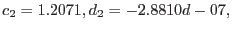
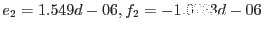

The predicted position of a smoke-ring is obtained from the following:
where x = xStar - xCentre, y = yStar - yCentre
and
and
 
These coefficients were obtained by Simon Rosen from a least-squares fit to about 100 measured positions of bright stars on OM images and their associated smoke-ring.
Bit 2 of all the quality-image pixels within a circular region of radius 38 unbinned pixels, centred on the predicted coordinates of the smoke-ring, will be set.